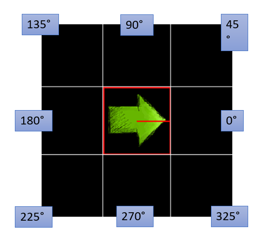

Drehungen¶
Du kannst einen Actor folgendermaßen drehen:
- Zunächst musst du einstellen, ob sich das Bild mit rotieren soll. Dies geht über das Attribut:
gamegridp.is_rotatable()
Beispiel:
1 2 3 | class Arrow(gamegridp.Actor):
def setup(self):
self.is_rotatable = True
|
Anschließend kannst du den Actor mit Hilfe der Methoden turn_left(), turn_right drehen. Alternativ dazu kannst du mit dem Attribut direction die Richtung auch direkt ändern.
1 2 3 4 5 6 | def act(self):
self.turn_left(45)
self.move(1)
self.turn_right(45)
self.move(1)
self.direction = 0
|
Winkel¶
Standardmäßig schaut jeder Actor nach rechts. Dies entspricht einem Winkel von 0°. Ansonsten werden die Winkel gegen den Uhrzeigersinn gemessen.
